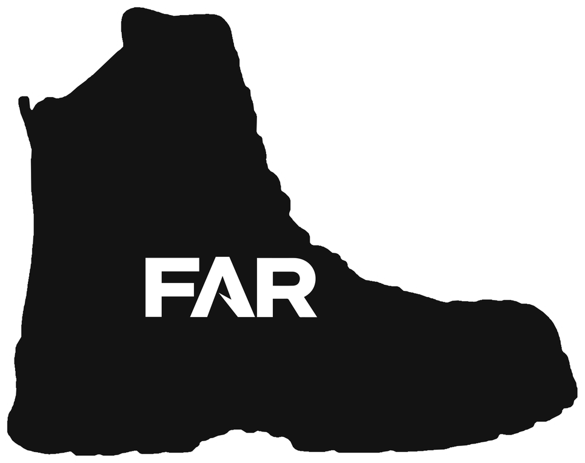
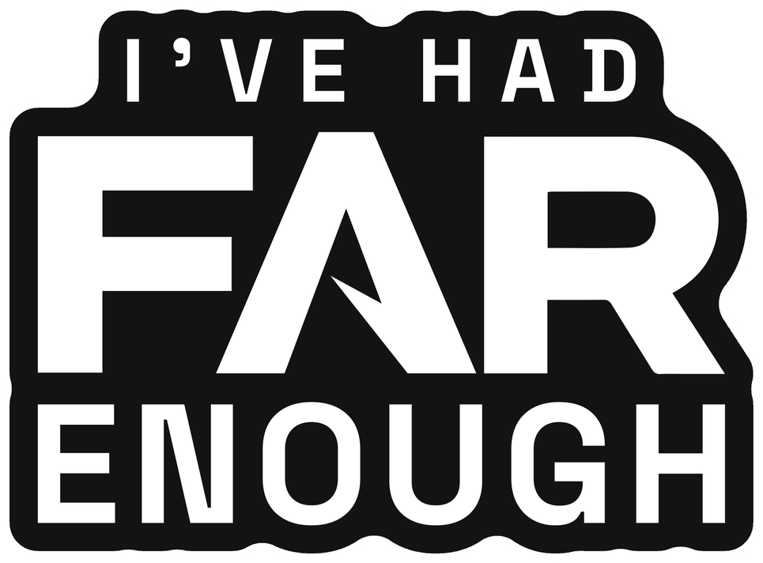
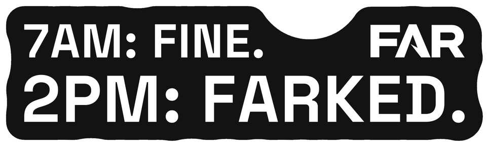
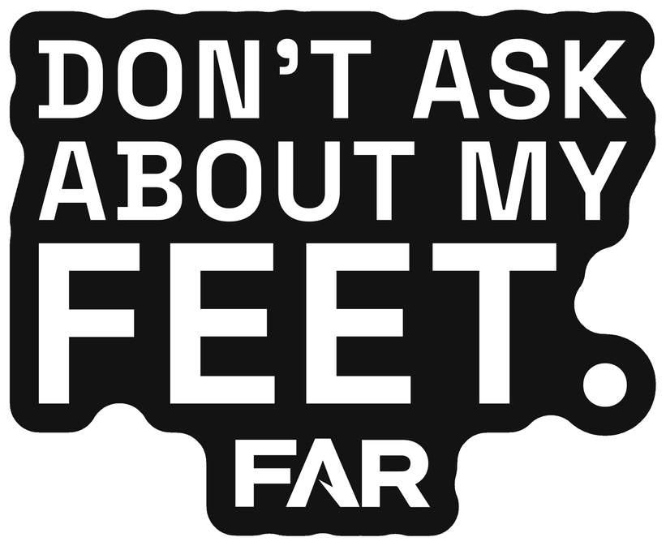
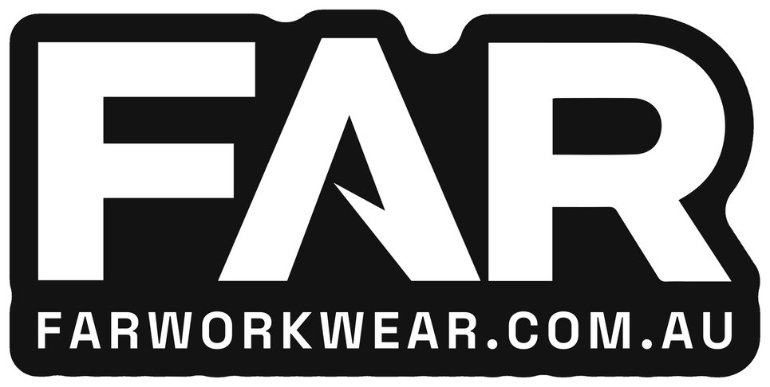
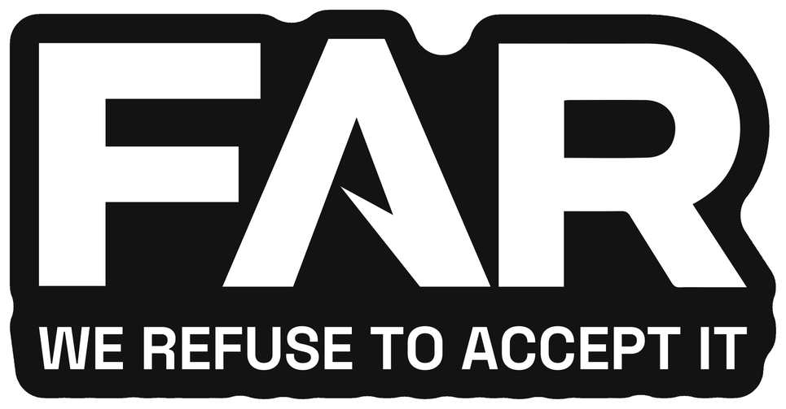
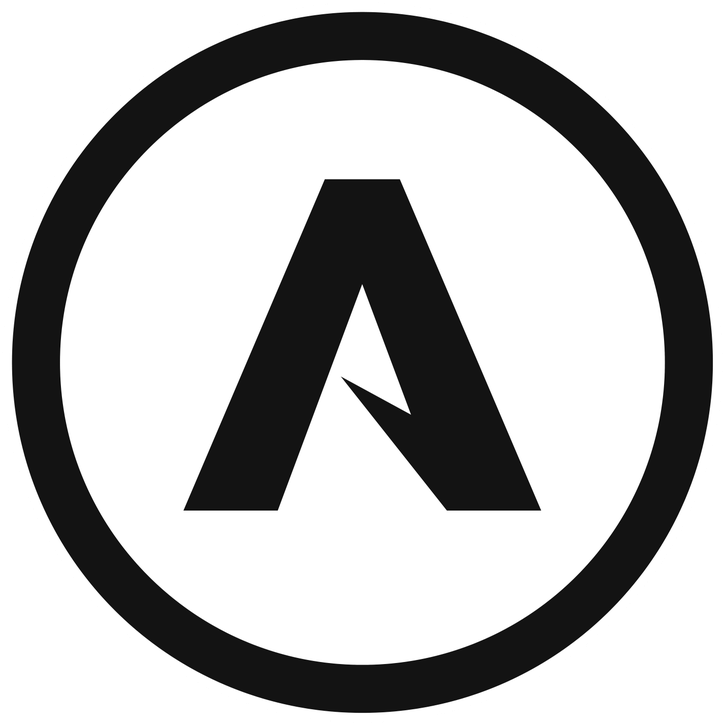
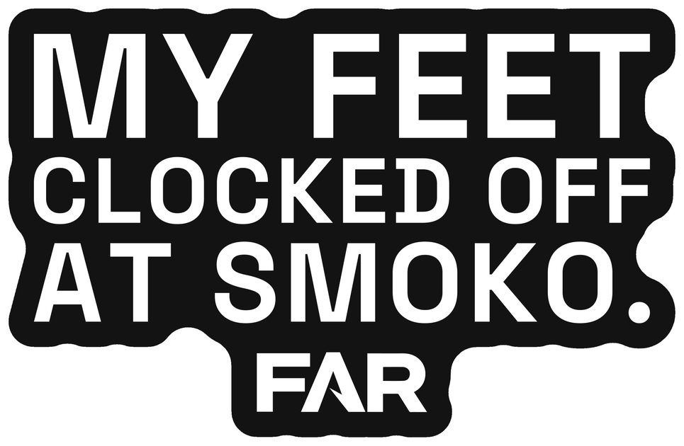
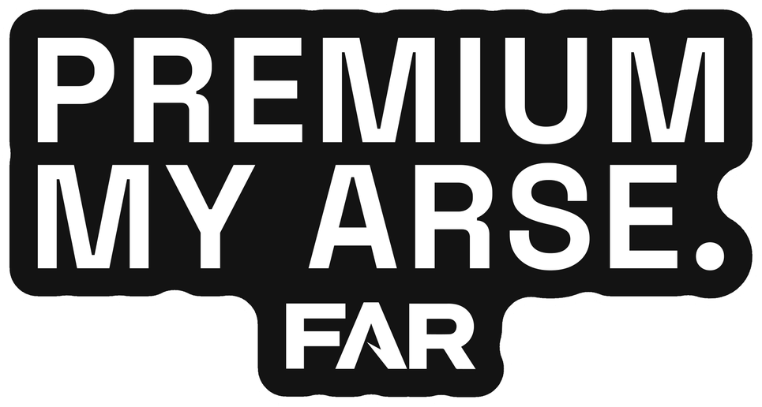
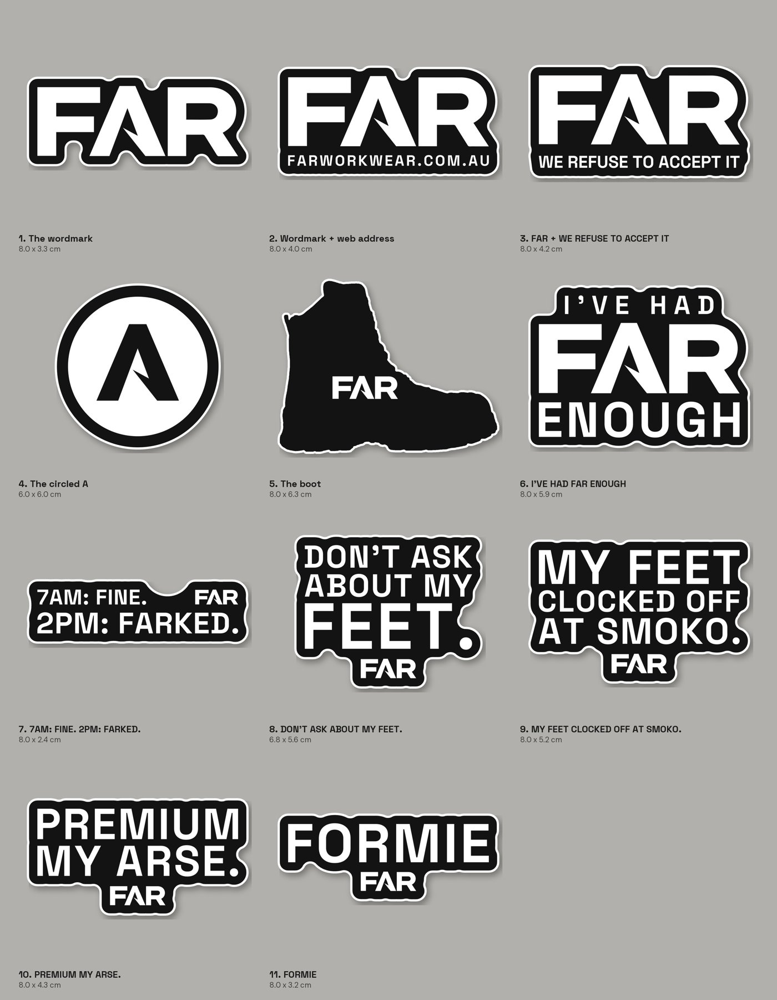

Carol is making 1,000 stickers for us: 5 designs, 200 of each. They're already paid for in her order. Here are 11 options. Claude's pick of 5 is marked. Carol needs the artwork by Wed 22 Oct.

Our boot's real outline with FAR in the foot. Same shape as the air freshener, so the box has one look. It says boots without a word.
8.0 x 6.3 cm

The one most likely to end up on a hard hat. It reads two ways: done for the day, and done with bad boots. The logo is the big word.
8.0 x 5.9 cm

Every bloke has had that day. He reads himself in it.
8.0 x 2.4 cm

Made to start a chat. The bloke next to him asks, and now they're talking about boots.
6.8 x 5.6 cm

The one that lets a stranger find us. Nobody can search "FAR" on its own and land on us. This one carries the address.
8.0 x 4.0 cm

The same mark as the caps, tees and stubby holders, and the one Carol already drew. Left out only because the rest of the merch already carries it.
8.0 x 4.2 cm
Plain FAR. Clean, but a stranger can't look us up from it.
8.0 x 3.3 cm

Our third logo, the A in a circle. It hasn't been used anywhere yet, so picking it is also deciding it's one of ours.
6.0 cm round

Same idea as number 3, said differently. Pick one of the two, not both.
8.0 x 5.2 cm

Same line as the website. Better on a toolbox than a hat.
8.0 x 4.3 cm
Grant's trade. Only formies will stick it on, so 200 is a lot for one trade.
8.0 x 3.2 cm
All 11 together, at their real sizes against each other:

The full record lives in FAR's merch notes. This link is unlisted, but anyone holding it can open it.